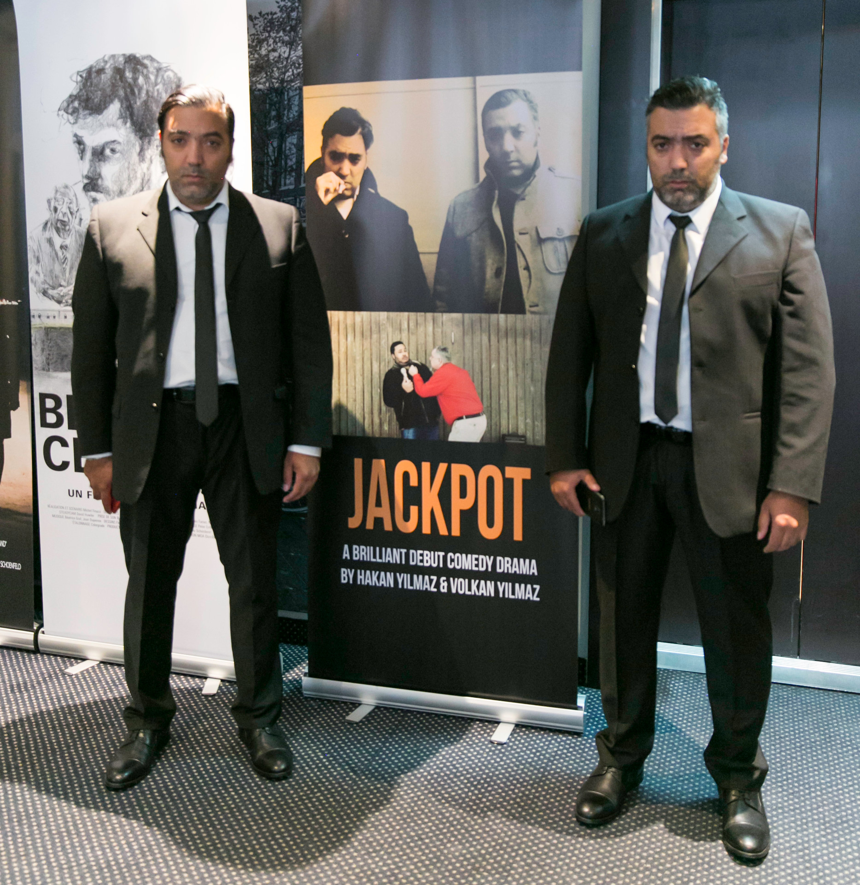
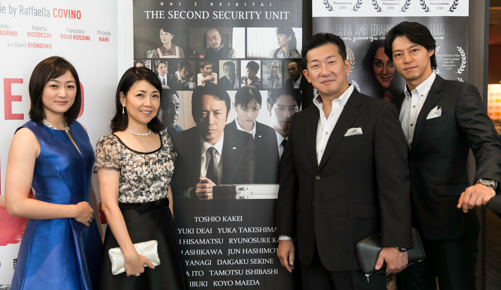
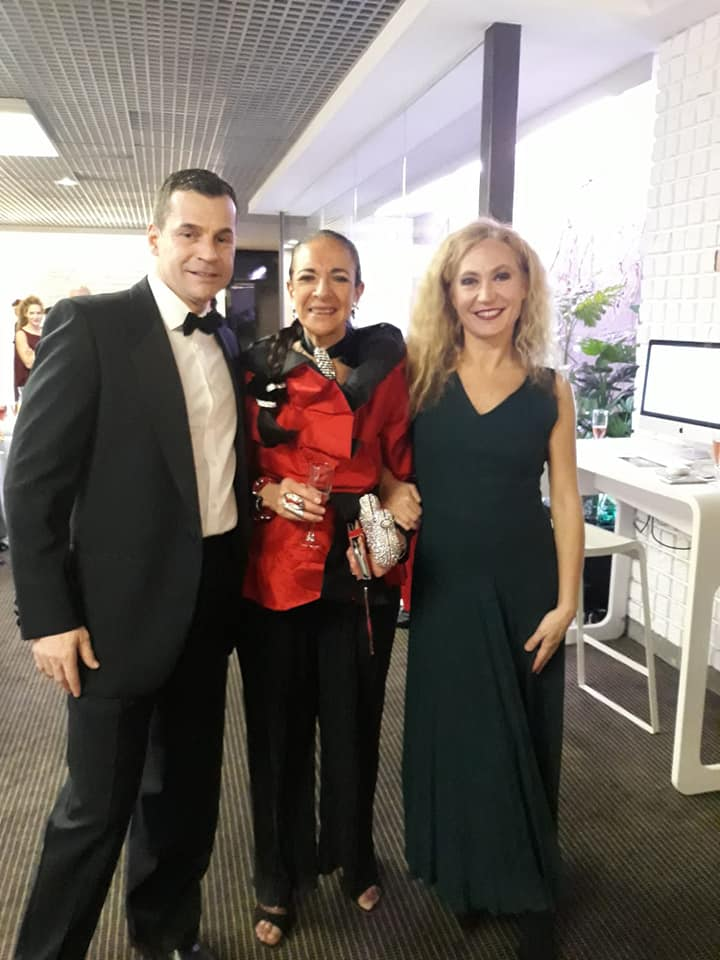

Mexico City
International Film Festival
Mexico City International Film Festival held in Mexico City in Mexico, will offer filmmakers that attend the festival great networking opportunities, we have for many year had the support from industry professionals, they are on hand to talk with you about all aspects of the business of film, because we are a film festival you will have access to these people all free of any charge, we screen all in one location all the panels the networking any meetings all is in one location, all the festival is free, many filmmakers promote there movie before they arrive, we promote your films as part of the schedule daily, we do have members of the public, we make one charge that is the awards night, this is a 6 to 7 hour awards night that includes dinner and is a celebration of film, however we do not insist you join us at the awards night all parts of the festival remain free, we have no sponsor and this one charge help all other parts of the festival to be free we feel the Mexico City International Film Festival is one of the greatest and most popular festivals in the world of independent film. This naturally fills our festival with a wealth of talent from around the world.
Our Mexico city International Film Festival is all held in one convenient location; All of the screenings, workshops, meetings, networking, industry professionals, Awards Night and even hotel rooms. That means that we will always be there, supporting you and your project from before the Festival starts to the closing ceremony. So we won’t be hard to find, or difficult to locate, we know how important it is for Festival organisers to be on hand and to supply that all important personal touch.
Independent filmmakers and creatives face many challenges; the large competition for viewers’ attention, finding funding and getting a distributor can only be overcome by the industry coming together and creating opportunities for those who need and deserve it. Our Festival’s aim are to create an opportunity for filmmakers to show their work to the right audience at our intimate and relaxing events, and get one step closer to success by receiving recognition for their art.
We have been helping filmmakers find distribution and funding for their next filmmaking venture. Year after year, we are praised by filmmakers for the opportunities that unlock upon entering and participating in our festival.
There is ample opportunity to attend networking events, industry professional talk panels, workshops, guest speaker events, film premieres, financing talks, director Q&A's, film screenings and to socialize with like-minded creatives from all walks of life. All of this is neatly wrapped in a week-long showcasing of films where our strong community supports any and every film, from first-time artists to seasoned creators.
Our prestigious awards ceremony concludes the festival in high fashion with a 5-course gala dinner to celebrate our nominees and winners.
We are a unique festival that provides a real platform for filmmakers to meet, network and do business during the festival week.
We have built a small but exceptional network of industry professionals that will look at all films entered and will give business and commercial advice. We have many success stories where attending distributors have made offers to the filmmakers, launching them and their work into the marketplace. We have the people and skills in our professional team to make this happen.
We can create a ripple for your movie to be seen around the world. It all starts here by entering today.
- 
- 
- 
Entry Rules
The Mexico City International Film Festival has as its objective the promotion of cinematographic art by presenting films of quality and entertainment. The Mexico City International Film Festival is an annual event based in Mexico City in Mexico it is possible that each film nominated may be presented more than once.
Feature films, documentaries and short subjects of any genre on video and DVD are selected by invitation from entries to the festival.
Entries must have been produced within the last four years. All films in a language other than English must be subtitled in English, we also welcome but it is not compulsory to have Spanish as well as English subtitles were the film is in neither English or Spanish to increase the possible markets, unless dialogue or commentary is unnecessary for comprehension and appreciation. In the exceptional event that an unsubtitled print is accepted, English and Spanish dialogue lists are required.
The Mexico City International Film Festival reserves the right to use excerpts from submitted work for promotional purposes only . If your submission is officially selected, the festival may screen your film as part of their activities to assist in the sale of your movie for up to 12 months after the festival date.
The Festival is open to the public as well as attending distribution and sales professionals. We work with a number of accredited national and international press working with the screening venues in Madrid, we have TV buyers and film buyers and distributors also attending, you will if your film is nominated have one to one meetings if you wish to talk business on your movie.
Official or professional national organisations and individuals may submit feature and short films to the Festival. Films submitted for pre-selection should arrive no later than 10th April 2019 and must be shipped as per instructions above. All shipping costs of films must be borne by the sender. Please note: it is not possible for us to return any DVD or tapes, but can be collected by you at the festival... It is the Mexico City International Film Festival's policy not to offer comments and reasons for films not selected for the programme.
By submitting your film you are agreeing to our terms and conditions.
Regards
Carl Tooney
President & Chief Executive Officer